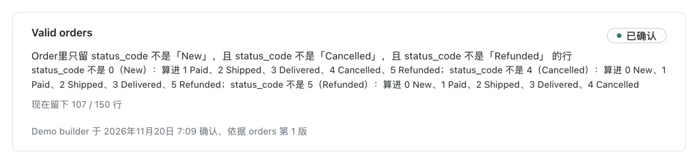
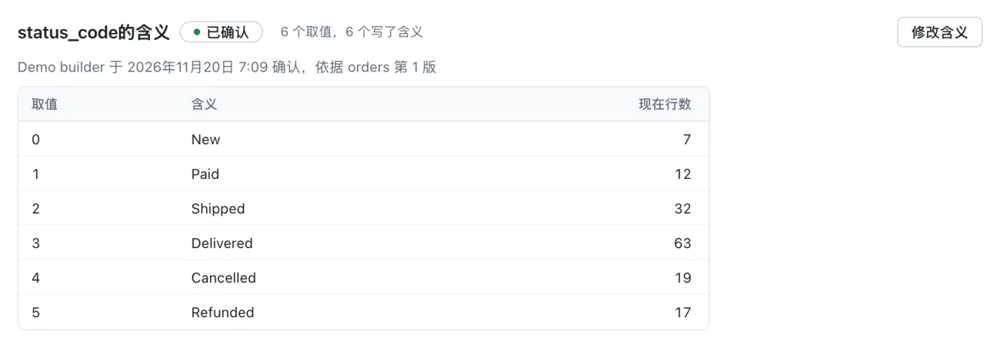
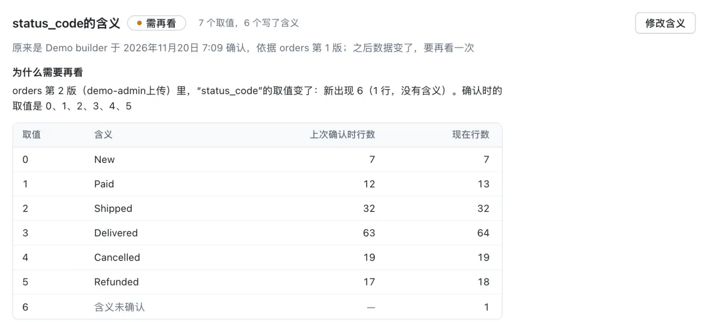

没人认领的口径
把示例订单的金额一列加起来，是 162,960。算术没错，但这不是营收：取消和退款的订单也带着金额。只算已付款、已发货、已送达的订单，是 119,810。
表里没有哪一列告诉你哪个才是营收。只有懂业务的人知道，而这件事通常没人写下来，更没人签字。
开源本体工具 · 团队应用 + MCP / Claude
AI 只按具名同事对着当前数据确认过的定义回答；没确认的，就拒答，并说出谁能确认。OntoPoc 是一个开源的本体工具，给数据团队用，也能通过 MCP 接进 Claude：表里的字段和代码是什么意思，可以让模型先起草；代码拿全部数据核一遍；再由另一个人确认。数据一变，定义退回“需要再看”。
点进去会拿到一个只读的访客账号，数据是合成的示例数据；提问由模型回答，每天有总量上限；访客 24 小时后自动删除。演示地址是临时的。
有效订单
status_code 为已付款、已发货或已送达，不含新建、已取消、已退款
建设者 A 提出。换成模型起草也一样：不管谁写的，这时都只是一个提议。
问答还不会用它：没人核过，也没人确认。
代码在 orders 第 1 版的每一行上跑过：留下 150 条里的 107 条。状态码 0 到 5，每个都写了含义。
问答仍然不用：检查通过不等于有人确认。
由另一位建设者确认，提议人自己不能确认。同时记下确认时依据的数据版本：orders 第 1 版。
问答“有效订单的总金额是多少？”→ 119,810
orders 第 2 版到了：改了 6 行，新增 4 行，还冒出一个没人写过含义的状态码 6。
问答拒答，说明是这个视图没确认、谁能确认。
01 问题在哪
把示例订单的金额一列加起来，是 162,960。算术没错，但这不是营收：取消和退款的订单也带着金额。只算已付款、已发货、已送达的订单，是 119,810。
表里没有哪一列告诉你哪个才是营收。只有懂业务的人知道，而这件事通常没人写下来，更没人签字。
下个月导出的数据里多了一个谁都没见过的状态码，看板照样出数，按的还是上个月的理解。
没有人收到提醒：数字底下那份约定，已经盖不住现在的数据了。
OntoPoc 把定义、检查结果、确认人和数据版本放在一起。答案能说清自己站在什么上面；说不清，AI 就不答，并说出谁能确认。
02 怎么用
写一个定义：对象类型、某个代码列每个取值的含义、一条关系，或者像“有效订单”（Valid orders）这样的视图；也可以让模型先起草。代码在全量数据上跑，不抽样：这个视图在 150 条订单里留下 107 条，每个状态码都有含义。
关系也这样数。仓库自带的演示工作簿里，160 行订单有 157 行连得上客户，剩下 3 行指向 KH099，客户表里没有这个编号。

另一位建设者看过检查结果和每个取值的行数，再点确认。谁提的定义、上次确认之后谁改过它，谁就不能确认它；已确认的定义改了任何一处（名称也算）都退回等人确认。只有一位建设者时这条会放开，日志里写明。
确认时记下是谁、依据哪一版数据。问答、看板和智能体只用已确认的定义。

每次上传都会重新检查已确认的定义。orders 第 2 版改了 6 行、新增 4 行，还冒出一个没写含义的代码 6。于是状态码含义、Order 类型和“有效订单”视图都回到“需再看”，各自写明原因。
重新确认之前，用到它们的问题一律拒答：建设者会看到是哪一项、谁能确认，查看者只看到答案在等确认。通过 MCP 接进来的智能体也一样拒答；看板显示它在等确认，以及上次的数。

截图来自本机跑的演示工作区副本（试点示例数据）；最后一张是上传 orders_update.csv 之后的样子。
03 对账单
下面的数来自仓库里的合成试点数据，用固定随机种子生成，不是哪家客户的数据。跑一下 make_sample.py，再和 expected_numbers.txt 对一对。
在线演示用的就是这份数据。试点手册带一个三到八人的团队，在自己机器上把同样几步走一遍。
状态码：新建 7 · 已付款 12 · 已发货 32 · 已送达 63 · 已取消 19 · 已退款 17
数据：docs/pilot/sample · 走一遍：FIRST_DEFINITION.md（英文）
04 它的位置
最近有研究让语言模型从文本里搭出本体或图谱的大部分，也坦白写了哪些没测。OntoPoc 做的是起草之后那一步，主要面向表格：起草出来的定义，没经过代码检查、没人确认之前，什么都不算。
本体先约定有哪些对象、每个怎么识别、之间允许什么关系；知识图谱通常还装着具体的实例和它们之间的连接。OntoPoc 只做本体这一侧，用的是复制进它自己工作区的数据；它不是知识图谱平台。
你们的指标也许已经在语义层里定义好了。谁签过字？底下的数据变了，谁会知道？OntoPoc 让每个定义带着确认人和数据版本；其中一样对不上了，AI 就不再拿它回答。目前还不能导出到某个具体的语义层。
它是什么：一个自己部署的团队应用。有账号和三种角色（管理员、建设者、查看者）；数据集来自 CSV、Excel，或只读连接 PostgreSQL、MySQL（复制进来，每次最多 50 万行、约 200 MB）；有轻管道和血缘；有对象类型、关系、视图和派生属性；问答、看板和 MCP 智能体只用已确认的定义。
它不是什么：不是数据平台，不是编排工具，不对你的数据库现查，不比图表种类，也不是知识图谱平台。
回答问题时，模型看到的是结构、已确认的含义，以及取值很少的列有哪些取值，看不到你的数据行；查询由代码执行，并核对它用了哪些定义。
05 MCP / Claude
外部智能体以某位同事的身份接进来：管理员在应用里发一个个人令牌（ONTOPOC_TOKEN），设了 ONTOPOC_TOOLSET=read（如下）或令牌是只读的，智能体就只拿到 6 个只读工具。和问答一样，它只按这个人看得到的已确认定义回答，其余的拒答并说明原因。工具和页面共用本机服务，所以先把服务启动起来。
claude mcp add ontopoc -- env ONTOPOC_TOKEN=<你的令牌> ONTOPOC_TOOLSET=read \
PYTHONPATH=$PWD/src python3 -m ontology_poc_generator.mcp_serverClaude Code、Claude Desktop、Cursor 等支持 MCP 的客户端都能用，走本机 stdio；应用里的“AI 工具接入”页也给出 JSON（粘贴时在 env 里加上 "ONTOPOC_TOOLSET": "read"）。这 6 个工具不能上传、写定义或确认；范围“全部”的令牌如果不设 ONTOPOC_TOOLSET=read，还会带出早期界面的运行类工具。完整清单见 docs/MCP.md。
claude plugin marketplace add Longado/ontopoc
claude plugin install ontopoc@ontopoc它的两个命令 /ontopoc:ontopoc-build、/ontopoc:ontopoc-review 目前走早期按运行建模的界面，不经过团队应用的确认关口。
06 自己跑
git clone https://github.com/Longado/ontopoc.git && cd ontopoc && ./scripts/ontopoc-start.sh需要 Python 3.11+ 和 Node 22+（Mac 或 Linux）。它会装好依赖、构建页面，第一次运行时创建管理员，然后在 http://127.0.0.1:8767/ 提供页面和接口。数据放在 ~/.ontopoc/data。模型密钥（DeepSeek 或 OpenRouter）可以不配：没有密钥时，问答和建模会提示缺少密钥，其他功能照常。
团队试用：两周试点手册 · 在 HTTPS 后面部署。
07 现状
08 常见问题
把业务里的对象、每个对象怎么识别、代码代表什么、对象之间允许什么关系，写成可以检查的定义。在 OntoPoc 里，模型或人起草，代码对照数据核对，再由另一个人确认。
本体约定类型和允许的关系；知识图谱通常还包含具体的实例和它们之间的连接。OntoPoc 侧重本体这一侧，在你上传的数据上做检查。它不是知识图谱平台。
语义层常指在数仓上定义业务含义和指标口径。你们的指标也许已经在那里了：谁签过字？底下的数据变了，谁会知道？OntoPoc 让每个定义带着确认人和数据版本，数据一动就退回“需要再看”，有人重新确认之前，AI 不会拿它回答。目前还不能导出到某个具体的语义层。
就是智能体通过 MCP（Model Context Protocol）读一个团队已确认的本体。设了 ONTOPOC_TOOLSET=read 或用只读令牌时，OntoPoc 的 MCP 服务给智能体 6 个只读工具（读定义、提问、运行本体查询、列出未确认项、读派生属性、看每条定义现在是否已确认），供 Claude Code、Claude Desktop、Cursor 等客户端调用；用到未确认定义的，一律拒答。接法见上面的 MCP / Claude。
自动生成得到的是草稿。OntoPoc 管的是草稿之后：代码对照数据检查每个定义，一位具名的人确认，数据变了就退回再看。模型可以起草定义，但没通过检查、没被确认之前，问答和智能体都不会用它；在那之前，看板只对建设者和管理员显示依赖它的数，标灰并写明原因。
想让 AI 回答自家表格问题、又希望它答不准时宁可拒答的小数据团队（三到八个人：运营、财务、数据）。建设者写定义、互相确认，查看者问问题、看看板。目前还没有作者以外的人独立用过。